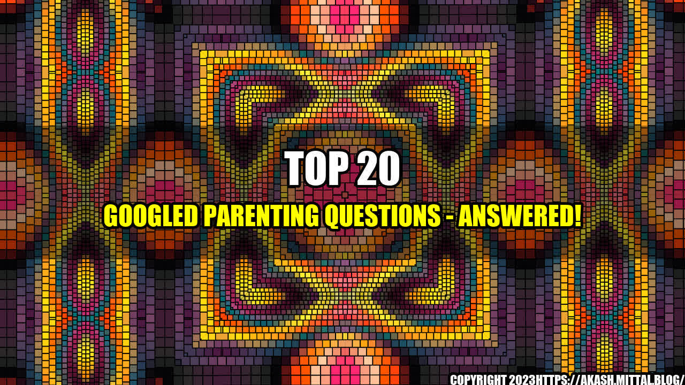

Top 20 Googled Parenting Questions - Answered!

As a new parent, I remember feeling overwhelmed with the amount of information available on the internet about parenting. I would spend hours researching every little thing to make sure I was doing it right. One day, while scrolling through endless pages of search results, I stumbled upon the top 20 googled parenting questions. I was shocked to find that I had googled almost all of them myself! I knew then that I wasn’t alone in my quest for answers. So here they are, the top 20 most googled parenting questions, answered!
1. How do I get my baby to sleep through the night?
This is one of the biggest concerns of new parents. Unfortunately, there is no magical solution to getting your baby to sleep through the night. However, there are strategies you can implement to help your baby develop good sleep habits:
- Create a consistent bedtime routine
- Keep the bedroom dark and quiet
- Put your baby down to sleep drowsy, but not fully asleep
- Don't rush in to pick up your baby the second they start crying - give them a chance to self-soothe
- Consider sleep training methods like the Ferber method or the "cry it out" method (consult with your pediatrician first)
2. When can I start feeding my baby solid foods?
The American Academy of Pediatrics recommends introducing solid foods between 4-6 months, when your baby is showing signs of being ready:
- Ability to sit up with support
- Loss of tongue-thrust reflex (meaning they don't automatically push food out of their mouth with their tongue)
- Showing interest in food by leaning forward, opening their mouth, or grabbing for the spoon
It's important to start with single-grain cereals or pureed fruits and vegetables and introduce new foods slowly to watch for any potential allergic reactions.
3. How do I discipline my child without spanking?
Spanking is a controversial topic, and many parents are choosing to use other forms of discipline. Here are some alternatives:
- Timeouts - a few minutes to cool down and think about their actions
- Natural consequences - allowing your child to experience the consequences of their actions (e.g. if they refuse to wear a coat, let them experience being cold outside)
- Positive reinforcement - rewarding good behavior, rather than punishing bad behavior
- Redirection - distracting your child from negative behavior by redirecting their attention to something positive
4. How can I increase my breast milk supply?
There are several strategies for increasing breast milk supply:
- Nurse or pump frequently to signal your body to produce more milk
- Stay hydrated and eat a balanced diet
- Try lactation cookies or supplements like fenugreek or blessed thistle
- Make sure your baby is latching properly to ensure that they are getting enough milk
- Consider consulting with a lactation consultant
5. How do I deal with my baby's colic?
Colic is defined as excessive crying in a baby for no apparent reason. It can be tough to deal with, but there are some strategies that may help:
- Try different soothing methods like rocking, swaddling, or using a white noise machine
- You can also try bicycling your baby's legs or giving them a warm bath
- If you suspect your baby is experiencing colic due to a milk allergy or intolerance, you may need to adjust your diet or try a different formula
6. When should I start potty training?
Most children are ready to start potty training around 2-3 years old, but it's important to watch for signs of readiness:
- Ability to communicate their need to use the bathroom
- Stable walking and ability to sit still for a short period of time
- Interest in using the potty or wearing underwear
It's important to be patient and not pressure your child to use the potty before they are ready. It's also important to praise and reward them for their successes, rather than punishing them for accidents.
7. How much should my baby be eating?
The amount of food your baby needs will depend on their age and stage of development. Here are some general guidelines:
- Newborns should be eating every 2-3 hours
- By 6 months, babies should be eating 4-6 ounces of breast milk or formula at each feeding
- Once solid foods are introduced, babies should be eating 1-2 tablespoons of each food per meal
- Make sure to also offer water with meals, especially once solid foods are introduced
8. How can I tell if my baby is getting enough to eat?
There are several signs that your baby is getting enough to eat:
- They are gaining weight and growing at a steady rate
- They are having the appropriate amount of wet and dirty diapers
- They seem satisfied after feedings and are not constantly rooting or crying for more
If you have concerns about your baby's feeding or growth, consult with your pediatrician.
9. How can I support my baby's development?
There are several things you can do to support your baby's development:
- Provide a safe and stimulating environment
- Regularly engage in activities that encourage cognitive and physical development, such as reading, tummy time, and age-appropriate toys
- Model good behavior and social skills
10. How can I bond with my baby?
Bonding with your baby is important for their emotional well-being. Here are some ways to bond with your baby:
- Hold your baby skin-to-skin as often as possible, especially in the early weeks
- Make eye contact and talk to your baby often
- Engage in activities like singing, reading, and playing together
11. When should I start brushing my baby's teeth?
You can start brushing your baby's teeth as soon as they start to come in, usually around 6-8 months. Use a soft-bristled toothbrush and water only, and gradually introduce toothpaste with fluoride after age 2.
12. How do I choose a daycare?
Choosing a daycare can be stressful, but here are some tips to help:
- Research different facilities and read online reviews
- Visit each facility and observe how the staff interacts with the children
- Ask about the caregiver-to-child ratio and the facility's safety procedures
13. How can I manage my child's screen time?
Screen time can be tricky to manage, but here are some tips:
- Set limits on screen time and enforce them consistently
- Encourage other forms of play and activity
- Establish technology-free zones and times, such as during meals or before bedtime
14. How can I handle my child's temper tantrums?
Temper tantrums are a normal part of development, but they can be challenging to handle. Here are some tips:
- Stay calm and don't react emotionally
- Redirect your child's attention to something positive
- Use positive reinforcement to encourage good behavior
- Establish clear boundaries and consequences for unacceptable behavior
15. How do I deal with separation anxiety?
Separation anxiety is common in young children, but it can be tough to deal with. Here are some strategies:
- Establish a consistent routine and stick to it
- Stay positive and reassuring, but don't make a big deal out of leaving
- Encourage your child to bring a comfort item from home
- Offer a goodbye ritual like a special hug or kiss
- Stay in communication with your child's caregiver to ease your own anxieties
16. How do I boost my child's self-esteem?
Boosting your child's self-esteem is important for their emotional well-being. Here are some tips:
- Praise your child's effort, not just their accomplishments
- Encourage independence and decision-making
- Offer opportunities for your child to succeed and build confidence
- Model positive self-talk and behavior
17. How can I get my child to take medicine?
Getting your child to take medicine can be a struggle, but here are some tips:
- Offer a spoonful of sugar (literally) or a sucker to help mask the taste
- Offer the medicine in small amounts or mix it with food or drink
- Stay calm and patient with your child
- Make sure you are giving the correct dosage and that the medicine is not expired
18. How do I introduce my child to new foods?
Introducing your child to new foods can be a challenge, but here are some tips:
- Offer small amounts of a new food alongside familiar foods
- Encourage your child to try the new food, but don't force them
- Offer the new food in different forms or preparations (e.g. raw vs. cooked, sliced vs. mashed)
- Try presenting the new food in a fun and creative way, like arranging it into a smiley face
19. How can I get my child to listen to me?
Getting your child to listen can feel like a never-ending battle, but here are some tips:
- Get down to your child's level and make eye contact when speaking
- Use a calm and firm tone of voice
- Establish clear boundaries and consequences for not listening
- Offer choices and involve your child in decision-making when possible
20. How do I know if my child is ready for kindergarten?
Kindergarten readiness can depend on many factors, but here are some general guidelines:
- Your child should be able to follow basic instructions and routines
- They should be able to communicate their thoughts and needs effectively
- They should exhibit interest and curiosity in learning
Conclusion
Parenting can be challenging, but no question is too big or small. Hopefully, these answers to the top 20 googled parenting questions have given you some peace of mind and helpful tips. Remember, every child is different and what works for one may not work for another. Trust your instincts and don't be afraid to reach out for support when you need it.
References
- https://www.healthychildren.org/English/ages-stages/baby/sleep/Pages/Getting-Your-Baby-to-Sleep.aspx
- https://www.healthychildren.org/English/ages-stages/baby/feeding-nutrition/Pages/Switching-To-Solid-Foods.aspx
- https://www.healthychildren.org/English/family-life/family-dynamics/communication-discipline/Pages/Positive-Discipline-Toddlers.aspx
- https://www.healthychildren.org/English/ages-stages/baby/breastfeeding/Pages/Increasing-Your-Milk-Supply.aspx
- https://www.healthychildren.org/English/ages-stages/baby/crying-colic/Pages/How-to-Soothe-a-Crying-Baby.aspx
- https://www.healthychildren.org/English/ages-stages/toddler/toilet-training/Pages/How-to-Potty-Train.aspx
- https://www.healthychildren.org/English/ages-stages/baby/feeding-nutrition/Pages/How-Often-and-How-Much-Should-Your-Baby-Eat.aspx
- https://www.healthychildren.org/English/ages-stages/baby/feeding-nutrition/Pages/Is-Your-Baby-Getting-Enough-Milk.aspx
- https://www.healthychildren.org/English/ages-stages/baby/Pages/Physical-Development-of-Infants.aspx
- https://www.healthychildren.org/English/ages-stages/baby/Pages/Bonding-With-Your-Baby.aspx
- https://www.healthychildren.org/English/ages-stages/baby/teething-tooth-care/Pages/Brushing-First-Tooth.aspx
- https://www.naeyc.org/our-work/families/choosing-child-care-program
- https://www.healthychildren.org/English/ages-stages/baby/Pages/Where-We-Stand-TV-Viewing-Time.aspx
- https://www.healthychildren.org/English/family-life/family-dynamics/behavior-discipline/Pages/Temper-Tantrums.aspx
- https://www.healthychildren.org/English/family-life/family-dynamics/Pages/Helping-Children-with-Separation-Anxiety.aspx
- https://www.healthychildren.org/English/ages-stages/preschool/Pages/Building-Your-Childs-Self-Esteem.aspx
- https://www.healthychildren.org/English/Pages/default.aspx
- https://www.ncbi.nlm.nih.gov/pmc/articles/PMC3020090/
Hashtags and SEO Keywords
- #parentingtips
- #momlife
- #parentinghacks
- #newparent
- #parentingstruggles
- #babyfeeding
- #pottytraining
- #discipline
- #sleeptraining
- #breastfeeding
- #colic
- #kindergarten
- #separationanxiety
- #temper tantrum
- #daycare
- #screen time
- #self esteem
- #medicine
- #newfoods
- #topgoogledparentingquestions
- #bestparentingtips
- #raisingkids
- #parentingtoddlers
- #earlychildhooddevelopment
Article Category
Parenting Tips
Curated by Team Akash.Mittal.Blog
Share on Twitter Share on LinkedIn